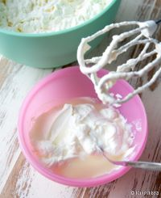
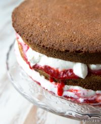
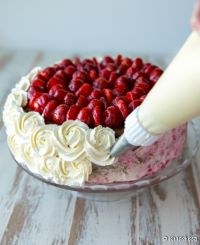

Tämä mehevä mansikkainen täytekakku on täydellinen valinta juhliin ja erityisiin hetkiin. Raikas kermatäyte ja makeat mansikat tekevät kakusta täydellisen herkullisen.
Ainekset
Pohja:
- 4 munaa
- 1 ½ dl sokeria
- 2 dl vehnäjauhoja
- 1 tl leivinjauhetta
Täyte:
- 2 dl vispikermaa
- 200 g maitorahkaa
- 2 rkl sokeria
- 1 tl vaniljasokeria
- 2 dl mansikoita (viipaleina)
Valmistusohjeet
1. Vatkaa munat ja sokeri kuohkeaksi vaahdoksi.
2. Sekoita jauhot ja leivinjauhe keskenään ja siivilöi vaahdon joukkoon. Sekoita varovasti.
3. Kaada taikina voideltuun vuokaan ja paista 175°C noin 30 minuuttia. Anna jäähtyä.
4. Vatkaa kerma vaahdoksi ja sekoita joukkoon rahka, sokeri ja vaniljasokeri.
5. Leikkaa kakkupohja kahteen osaan. Levitä väliin kermarahkaseosta ja mansikkaviipaleita.
6. Kuorruta kakku lopulla kermavaahdolla ja koristele tuoreilla mansikoilla.
Vaiheittaiset kuvat


